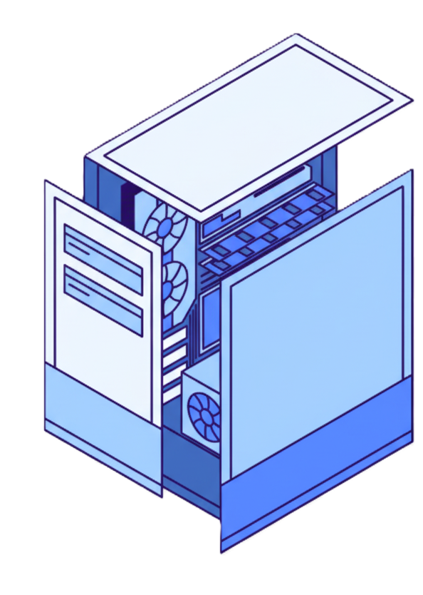

Ciberseguridad
Herramientas clave y buenas prácticas para proteger tu red


Kismet Wireless Kismet Wireless es un detector de redes inalámbricas que permite la captura de paquetes y es una herramienta esencial en la detección de intrusiones inalámbricas (WIDS). Proporciona a los profesionales de la seguridad una visión clara de las redes a su alrededor, facilitando la identificación de vulnerabilidades y la protección de información crítica.
- Detector de redes: permitiendo identificar múltiples redes inalámbricas en un área determinada, lo que es esencial para la seguridad y auditoría de redes.
- Captura de paquetes: datos que circulan a través de las redes, lo que permite un análisis detallado del tráfico y la identificación de posibles problemas de seguridad.
- Analisis de traficose utiliza comúnmente en auditorías de seguridad para evaluar la integridad de las redes y detectar vulnerabilidades que podrían ser explotadas por intrusos.
- Multiples redes:permite la detección simultánea de múltiples redes inalámbricas, lo que facilita la vigilancia y análisis en entornos complejos..
- Compatibilidad multiplataforma: Es compatible con diversas plataformas, incluyendo Linux y Windows, lo que permite su uso en una variedad de dispositivos y sistemas operativos.
- Identificación de vulnerabilidades: Kismet Wireless ayuda a identificar vulnerabilidades en redes inalámbricas, permitiendo a los administradores de seguridad tomar medidas proactivas para proteger la infraestructura.
- Requiere hardware compatible como adaptadores con modo monitor.
- No es intuitivo; curva de aprendizaje alta.
- Puede usarse de manera indebida si no se aplica ética y legalidad.
Kismet Wireless proporciona la visibilidad completa y la detección temprana de amenazas que son cruciales en la ciberseguridad actual. Es una herramienta indispensable tanto para profesionales experimentados como para entusiastas que buscan fortalecer la protección de sus redes. Su uso responsable no solo ayuda a identificar vulnerabilidades, sino que también contribuye a construir un entorno digital más seguro.

CommView es una herramienta creada por TamoSoft, diseñada para capturar y analizar el tráfico de red de manera detallada. Es compatible tanto con redes Ethernet como Wi-Fi. Además, tiene la capacidad de decodificar más de 300 protocolos, lo que la convierte en una opción potente para quienes necesitan entender el funcionamiento interno de su red.
Captura paquetes en tiempo real
y va recogiendo todos los paquetes de datos que
viajan por Ethernet o Wi-Fi. Esto permite ver lo que realmente circula en la red en ese instante
(direcciones IP, protocolos usados, aplicaciones activas).
Presenta estadísticas y gráficos de tráfico.
- Uso del ancho de la banda
- DIspositovos mas activos
- Protocolos mas ultilizados

Es importante porque ofrece una visión clara y completa de todo el tráfico, ya sea en tiempo real o fuera de línea. Esto ayuda a identificar problemas de seguridad y rendimiento antes de que se conviertan en algo más grave. Además, facilita las auditorías y la resolución de incidentes críticos, lo que es clave para mantener todo funcionando sin interrupciones. Lo mejor es que funciona tanto en redes cableadas como inalámbricas, adaptándose a diferentes entornos y necesidades.
- Monitorización avanzada: captura y analiza el tráfico de red a un nivel granular, ofreciendo datos críticos para la resolución de problemas y la seguridad.troubleshooting.
- Análisis dual: Admite análisis en tiempo real y fuera de línea de flujos de datos a través de Ethernet y Wi-Fi, lo que permite obtener información completa sobre protocolos y conexiones..
- Decodificador flexible: Soporta cientos de protocolos y genera estadísticas detalladas para ayudar a identificar problemas de red y mejorar los procesos de auditoría de seguridad .
- Trayectoria y soporte: Respaldado por más de 20 años de desarrollo continuo.
- Actualización constante: Incorpora nuevas tendencias y mejoras de seguridad.
- Versátil: Útil en ambientes empresariales, educativos o de investigación.
CommView destaca por su análisis profundo, descifrado de comunicaciones SSL/TLS y reportes avanzados, facilitando la identificación y solución precisa de amenazas y cuellos de botella.

WPA es el estándar de seguridad que reemplazó a WEP, reforzando el cifrado y la autenticación en redes inalámbricas. Protege datos contra accesos no autorizados y vulnerabilidades del pasado.
Fue creado por la Wi-Fi Alliance en 2003 para solucionar las debilidades de WEP, con cifrado más robusto y mecanismos de autenticación avanzados.
El uso de Wi-Fi Protected Access (WPA) es esencial en el ámbito de la ciberseguridad, ya que garantiza la protección de las comunicaciones frente a posibles interceptaciones. Por ejemplo, en un entorno público como un café, la ausencia de WPA3 podría permitir que terceros accedan a información sensible transmitida a través de la red inalámbrica.
- WPS inseguro: El PIN de WPS es vulnerable a ataques por fuerza bruta.
- KRACK: Ataques de reinstalación de claves en WPA2 permiten descifrar datos.
- Dragonblood: Vulnerabilidades detectadas en WPA3, como ataques de downgrade.
- Prevención: Desactivar WPS y usar contraseñas robustas, junto a monitorización activa.
- inSSIDer / NetSpot: Analiza cobertura, interferencia y configuración de seguridad.
- Kali Linux: Suite de auditoría con Aircrack-ng, Reaver, Wireshark y más.
- Aircrack-ng: Audita redes WPA/WPA2 (ataques de diccionario, inyección, etc).
El uso de tecnologías de seguridad avanzadas como WPA3 en tanto en entornos domésticos como
empresariales. En el ámbito del hogar, WPA3 proporciona una defensa eficaz contra intrusos,
asegurando la seguridad en actividades como el teletrabajo, la banca en línea y la conexión de
dispositivos IoT. Se recomienda utilizar routers modernos que soporten este protocolo para
maximizar la protección.
- Utiliza routers con soporte WPA3.
- Configura redes de invitados separadas.
- Sigue normativas ISO27001/GDPR para fortalecer el marco de seguridad.
- Mantén siempre activos los mecanismos de actualización y monitorización.

El estándar WIFI WPA es fundamental para mantener la integridad y seguridad de las redes inalámbricas. Su implementación adecuada, junto con la adopción de prácticas responsables de ciberseguridad, resulta indispensable para mitigar los riesgos asociados al entorno digital contemporáneo, caracterizado por su creciente complejidad y dinamismo. El uso de contraseñas seguras y la capacitación en temas de protección digital. Estas acciones son esenciales para mitigar riesgos y enfrentar los desafíos que surgen en un mundo cada vez más interconectado.
Autor: Enier Arauz